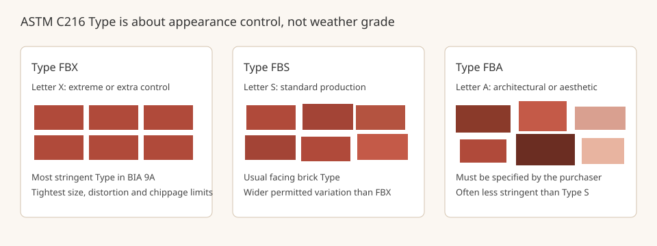

Mortar Smash › Trade guides › Facing brick types FBX, FBS and FBA
Facing brick is specified for looks as well as for use. The weather Grade and the appearance Type are not the same thing, and mixing them up on a ticket is a common source of confusion. The Brick Industry Association's Technical Note 9A (October 2007) is the source for the Type rules on this page. Confirm the current edition of ASTM C216, or the other brick standard named in the specification, before you order.
Short answer
For ASTM C216 facing brick, Type FBX is the tightest appearance class, Type FBS is standard production, and Type FBA covers architectural or aesthetic criteria that the purchaser must specify and that are often looser than S. BIA 9A gives the letters those meanings: X for extreme or extra control, S for standard, and A for architectural. Grade SW, MW or NW still has to be chosen for the exposure. Color is not a Type limit; it is set by the sample panel or the specification.
What Type does, and what it does not
Technical Note 9A says appearance classification may include limits on dimensions, distortion, out-of-square and chippage, and that the class is based on the size and precision attained in manufacturing. Table 5 of the note lists ASTM C216 Types in order from more stringent to less stringent as FBX, FBS, then FBA. Building brick under ASTM C62 has no appearance Type at all, which is one reason C62 and C216 are not interchangeable on a visible wall. See which bricks for which jobs.
The same letter meanings apply across related standards in that table: hollow brick Types HBX, HBS, HBA and HBB (ASTM C652), and thin veneer Types TBX, TBS and TBA (ASTM C1088). Paving brick uses Application letters PX, PS and PA in ASTM C902 and C1272, with the same X, S and A idea. This page does not reproduce the numerical tolerance and chippage tables; those belong in the current ASTM standard and in Technical Note 9A. Use the published tables for the sizes you are buying.
There are no color-related tolerances in the ASTM brick standards, BIA 9A says. Color range is dictated by the sample panel or the project specification. If the ticket only says "Type FBS" it has not locked the color range.
Grade is a different line on the ticket
Weathering Grade is chosen for freeze-thaw exposure, not for how regular the arrises look. A Type FBX unit can still be the wrong Grade for a wet, freezing wall, and a Type FBA unit can be Grade SW. Specify both. The grades themselves are covered in brick frost resistance grades.
Where tighter control shows up on the wall
Permitted size variation, the 2007 note says, becomes important when vertical alignment of brick (stack bond) is used, when bands of brick from different production runs are combined, or when a short horizontal extent of brickwork is built, such as between closely spaced window openings. In those conditions, a specifier may call for FBX, or may require units to be blended from several packs so that one production run does not appear as a stripe. Stack bond also has structural implications that are not set by Type; see which brick bond for which job and the current code.

Facing brick types FBX, FBS and FBA FAQ
What is the difference between Type FBX, FBS and FBA?
They are appearance classes in ASTM C216 facing brick, not strength or weathering grades. BIA Technical Note 9A (October 2007) lists FBX as the most stringent Type, FBS in the middle, and FBA as the least stringent. The letters mean extreme or extra control (X), standard production (S), and architectural or aesthetic criteria that must be specified (A) and in many specifications are less stringent than S.
Does Type FBX mean the brick will survive frost better?
No. Type is about dimensional tolerances, distortion, out-of-square and chippage. Weathering is a separate Grade (SW, MW or NW in the US facing-brick standard). Pick the Grade for the exposure, then the Type for how tight the appearance limits should be. Color is not controlled by Type; BIA 9A says color is set by the sample panel or the project specification.
When does the tighter Type matter on site?
Technical Note 9A says size variation becomes important when brick are aligned vertically in stack bond, when bands of brick from different production runs are combined, or when only a short horizontal run of brickwork is built, such as between closely spaced window openings. In those cases a tighter Type, or a carefully blended lot, is more likely to be specified.
Sources
Figures and uses are quoted or condensed from the sources above, which were read on 12 November 2026. Codes and project specifications differ by country and job; where they conflict with this page, follow them.
Published 12 November 2026 by Mortar Smash. General information only, not engineering or code advice.